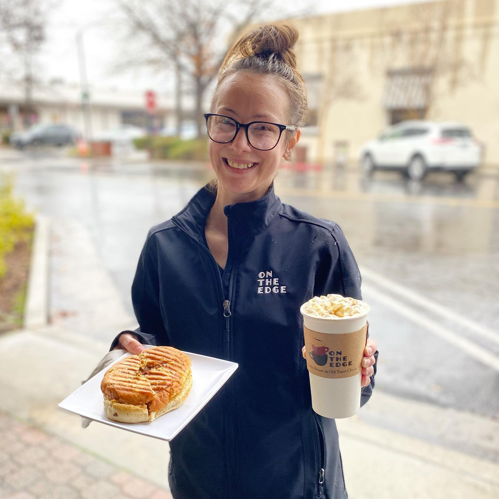

A Little Bit About Us
About Us
Welcome to On The Edge, a family-owned coffee shop in Old Town Clovis, California. Founded by Scott and Julie Glenn, our café celebrates community and the joy of simple pleasures. With carefully sourced and roasted beans, we offer a rich blend of coffee options, along with delicious food items made from fresh ingredients. Indulge in savory bagel sandwiches, salads, pastries, and more to satisfy your cravings.
At On The Edge, we offer more than just great coffee and food. We're a community hub where friends and family gather to connect, relax, and create memories. Our cozy atmosphere is perfect for catching up with friends, discovering local talents at live music events, or simply taking a moment to unwind. As a family-owned and operated business, we pride ourselves on warm hospitality and personalized service. Our friendly staff are dedicated to providing every customer with an exceptional experience. Join our community of coffee lovers and food enthusiasts today!